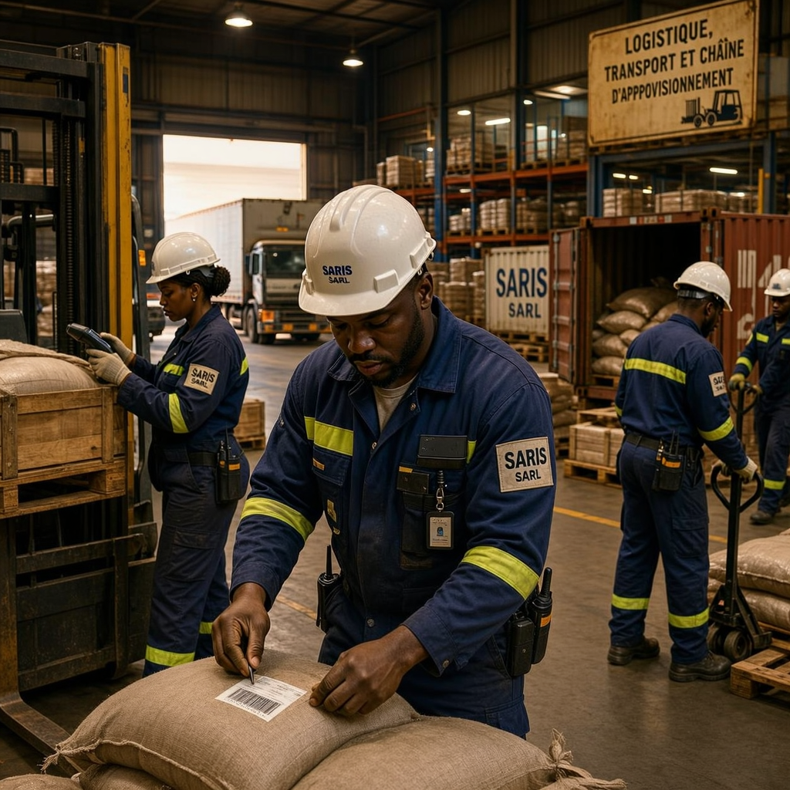
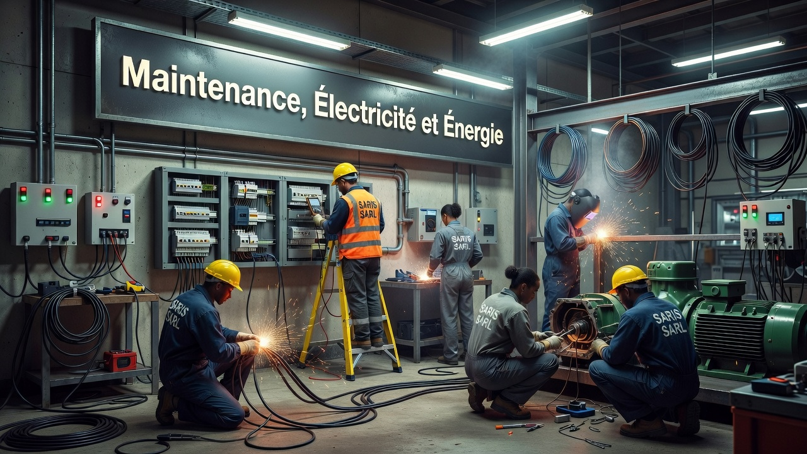

Des solutions adaptées aux besoins spécifiques de chaque secteur

Des prestations clé en main pour répondre aux exigences du secteur minier
Gestion complète de la chaîne d'approvisionnement : approvisionnement en matières premières, équipements, pièces de rechange et consommables. Optimisation des flux logistiques sur vos sites miniers.
Maintenance préventive et corrective des équipements miniers lourds. Intervention rapide pour minimiser les temps d'arrêt et maximiser la productivité de vos opérations.
Mise en place de protocoles de sécurité conformes aux normes minières. Gestion environnementale, surveillance des sites et formation du personnel aux procédures de sécurité.
Réalisation des travaux de génie civil : construction de bâtiments industriels, routes d'accès, plateformes de stockage et infrastructures nécessaires aux opérations minières.
Prestations industrielles spécialisées : soudure, mécanique industrielle, usinage, traitement thermique et services de ateliers mobiles sur site pour répondre à vos besoins opérationnels.

Des solutions intégrées pour la performance de vos installations industrielles
Maintenance préventive, corrective et conditionnelle de vos équipements industriels. Gestion de contrats de maintenance et optimisation des cycles de vie de vos actifs.
Construction et réhabilitation d'infrastructures industrielles : bâtiments, hangars, lignes de production, plateformes logistiques et zones de stockage.
Installation et maintenance de systèmes électriques industriels. Gestion des énergies, installation de panneaux solaires et optimisation de la consommation énergétique.
Gestion intégrée de vos installations : nettoyage, entretien des espaces verts, gestion des déchets, gardiennage et maintenance générale de vos bâtiments.
Optimisation de votre chaîne d'approvisionnement : gestion des stocks, planification des approvisionnements, transport et distribution pour une efficacité opérationnelle maximale.

Des prestations adaptées aux besoins spécifiques des institutions publiques
Réalisation de travaux d'infrastructure publique : routes, ponts, bâtiments administratifs, équipements collectifs et aménagements urbains conformes aux normes en vigueur.
Gestion logistique complète pour les institutions : approvisionnement, stockage, distribution d'équipements et de fournitures, transport de personnel et de matériel.
Services de sécurité et de gestion des installations publiques : gardiennage, surveillance, entretien des bâtiments, gestion technique et accueil du public.
Accompagnement à la transformation numérique des institutions : mise en place de solutions digitales, dématérialisation des procédures et formation du personnel aux outils numériques.
Formation professionnelle du personnel des institutions publiques : formation technique, gestion des ressources humaines, développement des compétences et organisation d'ateliers.
Contactez-nous pour discuter de vos projets et découvrir comment SARIS SARL peut vous accompagner.
Demander un Devis